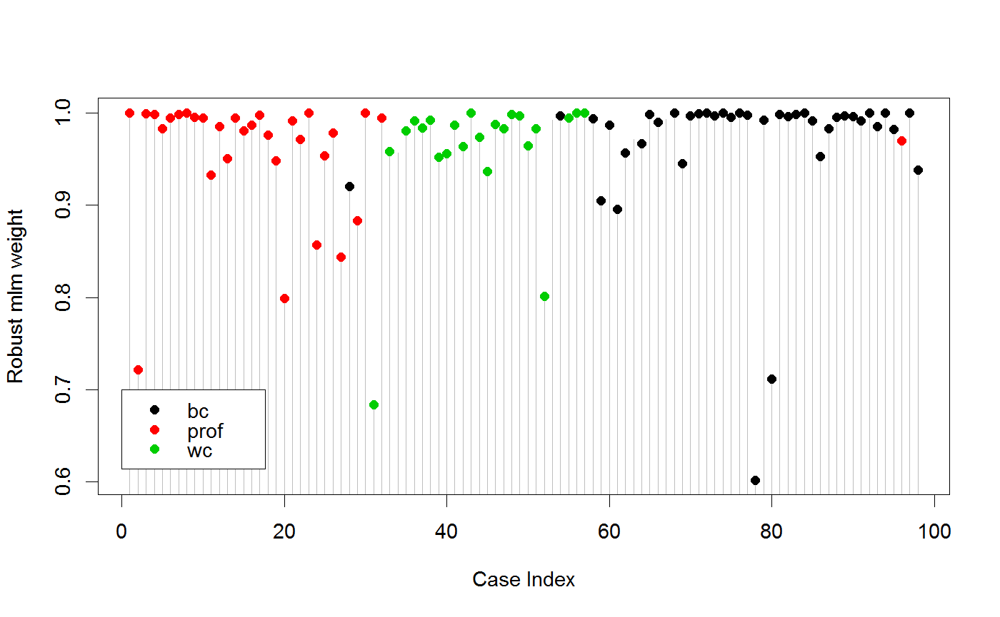

<!-- Generated by pkgdown: do not edit by hand -->
<!DOCTYPE html>
<html>
  <head>
  <meta charset="utf-8">
<meta http-equiv="X-UA-Compatible" content="IE=edge">
<meta name="viewport" content="width=device-width, initial-scale=1.0">

<title>Robust Fitting of Multivariate Linear Models — robmlm • heplots</title>

<!-- jquery -->
<script src="https://code.jquery.com/jquery-3.1.0.min.js" integrity="sha384-nrOSfDHtoPMzJHjVTdCopGqIqeYETSXhZDFyniQ8ZHcVy08QesyHcnOUpMpqnmWq" crossorigin="anonymous"></script>
<!-- Bootstrap -->
<link href="https://maxcdn.bootstrapcdn.com/bootswatch/3.3.7/cerulean/bootstrap.min.css" rel="stylesheet" crossorigin="anonymous">

<script src="https://maxcdn.bootstrapcdn.com/bootstrap/3.3.7/js/bootstrap.min.js" integrity="sha384-Tc5IQib027qvyjSMfHjOMaLkfuWVxZxUPnCJA7l2mCWNIpG9mGCD8wGNIcPD7Txa" crossorigin="anonymous"></script>

<!-- Font Awesome icons -->
<link href="https://maxcdn.bootstrapcdn.com/font-awesome/4.6.3/css/font-awesome.min.css" rel="stylesheet" integrity="sha384-T8Gy5hrqNKT+hzMclPo118YTQO6cYprQmhrYwIiQ/3axmI1hQomh7Ud2hPOy8SP1" crossorigin="anonymous">


<!-- pkgdown -->
<link href="../pkgdown.css" rel="stylesheet">
<script src="../jquery.sticky-kit.min.js"></script>
<script src="../pkgdown.js"></script>
  
  
<!-- mathjax -->
<script src='https://mathjax.rstudio.com/latest/MathJax.js?config=TeX-AMS-MML_HTMLorMML'></script>

<!--[if lt IE 9]>
<script src="https://oss.maxcdn.com/html5shiv/3.7.3/html5shiv.min.js"></script>
<script src="https://oss.maxcdn.com/respond/1.4.2/respond.min.js"></script>
<![endif]-->


  </head>

  <body>
    <div class="container template-reference-topic">
      <header>
      <div class="navbar navbar-default navbar-fixed-top" role="navigation">
  <div class="container">
    <div class="navbar-header">
      <button type="button" class="navbar-toggle collapsed" data-toggle="collapse" data-target="#navbar">
        <span class="icon-bar"></span>
        <span class="icon-bar"></span>
        <span class="icon-bar"></span>
      </button>
      <a class="navbar-brand" href="../index.html">heplots</a>
    </div>
    <div id="navbar" class="navbar-collapse collapse">
      <ul class="nav navbar-nav">
        <li>
  <a href="../index.html">
    <span class="fa fa-home fa-lg"></span>
     
  </a>
</li>
<li>
  <a href="../reference/index.html">Reference</a>
</li>
      </ul>
      
      <ul class="nav navbar-nav navbar-right">
        
      </ul>
    </div><!--/.nav-collapse -->
  </div><!--/.container -->
</div><!--/.navbar -->

      
      </header>

      <div class="row">
  <div class="col-md-9 contents">
    <div class="page-header">
    <h1>Robust Fitting of Multivariate Linear Models</h1>
    </div>

    
    <p>Fit a multivariate linear model by robust regression using a simple M estimator.</p>
<p>These S3 methods are designed to provide a specification of a class of
robust methods which extend <code>mlm</code>s, and are therefore compatible with
other  <code>mlm</code> extensions, including <code><a href='http://www.rdocumentation.org/packages/car/topics/Anova'>Anova</a></code> and
<code><a href='heplot.html'>heplot</a></code>.</p>
    

    <pre class="usage">robmlm(X, ...)

# S3 method for formula
robmlm(formula, data, subset, weights, na.action, 
	model = TRUE, contrasts = NULL, ...)

# S3 method for default
robmlm(X, Y, w, 
	P = 2 * pnorm(4.685, lower.tail = FALSE), tune, max.iter = 100, 
	psi = psi.bisquare, tol = 1e-06, initialize, verbose = FALSE, ...)


# S3 method for robmlm
print(x, ...)

# S3 method for summary.robmlm
print(x, ...)

# S3 method for robmlm
summary(object, ...)

<!-- %\method{vcov}{mlm}(object, ...) --></pre>
    
    <h2 class="hasAnchor" id="arguments"><a class="anchor" href="#arguments"></a> Arguments</h2>
    <table class="ref-arguments">
    <colgroup><col class="name" /><col class="desc" /></colgroup>
    <tr>
      <th>formula</th>
      <td><p>a formula of the form <code>cbind(y1, y2, ...) ~ x1 + x2 + ...</code>.</p></td>
    </tr>
    <tr>
      <th>data</th>
      <td><p>a data frame from which variables specified in <code>formula</code> are preferentially to be taken.</p></td>
    </tr>
    <tr>
      <th>subset</th>
      <td><p>An index vector specifying the cases to be used in fitting.</p></td>
    </tr>
    <tr>
      <th>weights</th>
      <td><p>a vector of prior weights for each case.</p></td>
    </tr>
    <tr>
      <th>na.action</th>
      <td><p>A function to specify the action to be taken if <code>NA</code>s are found. 
The 'factory-fresh' default action in R is 
<code><a href='http://www.rdocumentation.org/packages/stats/topics/na.fail'>na.omit</a></code>, and can be changed by <code><a href='http://www.rdocumentation.org/packages/base/topics/options'>options</a></code><code>(na.action=)</code>.</p></td>
    </tr>
    <tr>
      <th>model</th>
      <td><p>should the model frame be returned in the object?</p></td>
    </tr>
    <tr>
      <th>contrasts</th>
      <td><p>optional contrast specifications; see <code><a href='http://www.rdocumentation.org/packages/stats/topics/lm'>lm</a></code> for details.</p></td>
    </tr>
    <tr>
      <th>&#8230;</th>
      <td><p>other arguments, passed down. In particular relevant control arguments
can be passed to the to the <code>robmlm.default</code> method.</p></td>
    </tr>
    <tr>
      <th>X</th>
      <td><p>for the default method, a model matrix, including the constant (if present)</p></td>
    </tr>
    <tr>
      <th>Y</th>
      <td><p>for the default method, a response matrix</p></td>
    </tr>
    <tr>
      <th>w</th>
      <td><p>prior weights</p></td>
    </tr>
    <tr>
      <th>P</th>
      <td><p>two-tail probability, to find cutoff quantile for chisq (tuning constant);
default is set for bisquare weight function</p></td>
    </tr>
    <tr>
      <th>tune</th>
      <td><p>tuning constant (if given directly)</p></td>
    </tr>
    <tr>
      <th>max.iter</th>
      <td><p>maximum number of iterations</p></td>
    </tr>
    <tr>
      <th>psi</th>
      <td><p>robustness weight function; <code><a href='http://www.rdocumentation.org/packages/MASS/topics/rlm'>psi.bisquare</a></code> is the default</p></td>
    </tr>
    <tr>
      <th>tol</th>
      <td><p>convergence tolerance, maximum relative change in coefficients</p></td>
    </tr>
    <tr>
      <th>initialize</th>
      <td><p>modeling function to find start values for coefficients,
equation-by-equation; if absent WLS (<code>lm.wfit</code>) is used</p></td>
    </tr>
    <tr>
      <th>verbose</th>
      <td><p>show iteration history? (<code>TRUE</code> or <code>FALSE</code>)</p></td>
    </tr>
    <tr>
      <th>x</th>
      <td><p>a <code>robmlm</code> object</p></td>
    </tr>
    <tr>
      <th>object</th>
      <td><p>a <code>robmlm</code> object</p></td>
    </tr>
    </table>
    
    <h2 class="hasAnchor" id="details"><a class="anchor" href="#details"></a>Details</h2>

    <p>Fitting is done by iterated re-weighted least squares (IWLS),
using weights based on the Mahalanobis squared distances of the
current residuals from the origin, and a scaling (covariance) matrix
calculated by <code><a href='http://www.rdocumentation.org/packages/MASS/topics/cov.trob'>cov.trob</a></code>.
The design of these methods were loosely modeled on <code><a href='http://www.rdocumentation.org/packages/MASS/topics/rlm'>rlm</a></code>.</p>
<p>An internal <code>vcov.mlm</code> function is an extension of the standard <code><a href='http://www.rdocumentation.org/packages/stats/topics/vcov'>vcov</a></code> method
providing for observation weights.</p>
    
    <h2 class="hasAnchor" id="value"><a class="anchor" href="#value"></a>Value</h2>

    <p>An object of class <code>"robmlm"</code> inheriting from <code>c("mlm", "lm")</code>.</p>
<p>This means that the returned <code>"robmlm"</code> contains all the components
of <code>"mlm"</code> objects described for <code><a href='http://www.rdocumentation.org/packages/stats/topics/lm'>lm</a></code>,
plus the following:
<!-- %%  If it is a LIST, use --></p>
<dt>weights </dt><dd><p>final observation weights</p></dd>
<dt>iterations </dt><dd><p>number of iterations</p></dd>
<dt>converged </dt><dd><p>logical: did the IWLS process converge?</p></dd>
%% ...

The generic accessor functions 
<a href='http://www.rdocumentation.org/packages/stats/topics/coef'>coefficients</a>, 
<a href='http://www.rdocumentation.org/packages/stats/topics/effects'>effects</a>, 
<a href='http://www.rdocumentation.org/packages/stats/topics/fitted.values'>fitted.values</a> and 
<a href='http://www.rdocumentation.org/packages/stats/topics/residuals'>residuals</a>
extract various useful features of the value returned by robmlm. 

    
    <h2 class="hasAnchor" id="references"><a class="anchor" href="#references"></a>References</h2>

    <p>A. Marazzi (1993) <em>Algorithms, Routines and S Functions for Robust Statistics</em>. 
Wadsworth &amp; Brooks/Cole.</p>
    
    <h2 class="hasAnchor" id="see-also"><a class="anchor" href="#see-also"></a>See also</h2>

    <p><code><a href='http://www.rdocumentation.org/packages/MASS/topics/rlm'>rlm</a></code>,
<code><a href='http://www.rdocumentation.org/packages/MASS/topics/cov.trob'>cov.trob</a></code></p>
    

    <h2 class="hasAnchor" id="examples"><a class="anchor" href="#examples"></a>Examples</h2>
    <pre class="examples"><div class='input'><span class='co'>##############</span>
<span class='co'># Skulls data</span>

<span class='co'># make shorter labels for epochs and nicer variable labels in heplots</span>
<span class='no'>Skulls</span>$<span class='no'>epoch</span> <span class='kw'>&lt;-</span> <span class='fu'>factor</span>(<span class='no'>Skulls</span>$<span class='no'>epoch</span>, <span class='kw'>labels</span><span class='kw'>=</span><span class='fu'>sub</span>(<span class='st'>"c"</span>,<span class='st'>""</span>,<span class='fu'>levels</span>(<span class='no'>Skulls</span>$<span class='no'>epoch</span>)))
<span class='co'># variable labels</span>
<span class='no'>vlab</span> <span class='kw'>&lt;-</span> <span class='fu'>c</span>(<span class='st'>"maxBreadth"</span>, <span class='st'>"basibHeight"</span>, <span class='st'>"basialLength"</span>, <span class='st'>"nasalHeight"</span>)

<span class='co'># fit manova model, classically and robustly</span>
<span class='no'>sk.mod</span> <span class='kw'>&lt;-</span> <span class='fu'>lm</span>(<span class='fu'>cbind</span>(<span class='no'>mb</span>, <span class='no'>bh</span>, <span class='no'>bl</span>, <span class='no'>nh</span>) ~ <span class='no'>epoch</span>, <span class='kw'>data</span><span class='kw'>=</span><span class='no'>Skulls</span>)
<span class='no'>sk.rmod</span> <span class='kw'>&lt;-</span> <span class='fu'>robmlm</span>(<span class='fu'>cbind</span>(<span class='no'>mb</span>, <span class='no'>bh</span>, <span class='no'>bl</span>, <span class='no'>nh</span>) ~ <span class='no'>epoch</span>, <span class='kw'>data</span><span class='kw'>=</span><span class='no'>Skulls</span>)

<span class='co'># standard mlm methods apply here</span>
<span class='fu'>coefficients</span>(<span class='no'>sk.rmod</span>)</div><div class='output co'>#&gt;                      mb          bh          bl         nh
#&gt; (Intercept) 133.9539529 132.6656599 96.50561801 50.8900600
#&gt; epoch.L       4.1659721  -2.1793681 -4.84240950  1.1168866
#&gt; epoch.Q      -0.3671411  -1.3069085 -0.04276618  0.2817763
#&gt; epoch.C      -0.5833713  -0.7912067  1.03002114 -0.8379419
#&gt; epoch^4       0.6350148   0.8787857 -0.55919989 -0.6233314</div><div class='input'>
<span class='co'># index plot of weights</span>
<span class='fu'>plot</span>(<span class='no'>sk.rmod</span>$<span class='no'>weights</span>, <span class='kw'>type</span><span class='kw'>=</span><span class='st'>"h"</span>, <span class='kw'>xlab</span><span class='kw'>=</span><span class='st'>"Case Index"</span>, <span class='kw'>ylab</span><span class='kw'>=</span><span class='st'>"Robust mlm weight"</span>, <span class='kw'>col</span><span class='kw'>=</span><span class='st'>"gray"</span>)</div><div class='input'><span class='fu'>points</span>(<span class='no'>sk.rmod</span>$<span class='no'>weights</span>, <span class='kw'>pch</span><span class='kw'>=</span><span class='fl'>16</span>, <span class='kw'>col</span><span class='kw'>=</span><span class='no'>Skulls</span>$<span class='no'>epoch</span>)</div><div class='input'><span class='fu'>axis</span>(<span class='kw'>side</span><span class='kw'>=</span><span class='fl'>1</span>, <span class='kw'>at</span><span class='kw'>=</span><span class='fl'>15</span>+<span class='fu'>seq</span>(<span class='fl'>0</span>,<span class='fl'>120</span>,<span class='fl'>30</span>), <span class='kw'>labels</span><span class='kw'>=</span><span class='fu'>levels</span>(<span class='no'>Skulls</span>$<span class='no'>epoch</span>), <span class='kw'>tick</span><span class='kw'>=</span><span class='fl'>FALSE</span>, <span class='kw'>cex.axis</span><span class='kw'>=</span><span class='fl'>1</span>)</div><div class='img'></div><div class='input'>
<span class='co'># heplots to see effect of robmlm vs. mlm</span>
<span class='fu'><a href='heplot.html'>heplot</a></span>(<span class='no'>sk.mod</span>, <span class='kw'>hypotheses</span><span class='kw'>=</span><span class='fu'>list</span>(<span class='kw'>Lin</span><span class='kw'>=</span><span class='st'>"epoch.L"</span>, <span class='kw'>Quad</span><span class='kw'>=</span><span class='st'>"epoch.Q"</span>),
    <span class='kw'>xlab</span><span class='kw'>=</span><span class='no'>vlab</span>[<span class='fl'>1</span>], <span class='kw'>ylab</span><span class='kw'>=</span><span class='no'>vlab</span>[<span class='fl'>2</span>], <span class='kw'>cex</span><span class='kw'>=</span><span class='fl'>1.25</span>, <span class='kw'>lty</span><span class='kw'>=</span><span class='fl'>1</span>)</div><div class='input'><span class='fu'><a href='heplot.html'>heplot</a></span>(<span class='no'>sk.rmod</span>, <span class='kw'>hypotheses</span><span class='kw'>=</span><span class='fu'>list</span>(<span class='kw'>Lin</span><span class='kw'>=</span><span class='st'>"epoch.L"</span>, <span class='kw'>Quad</span><span class='kw'>=</span><span class='st'>"epoch.Q"</span>),
    <span class='kw'>add</span><span class='kw'>=</span><span class='fl'>TRUE</span>, <span class='kw'>error.ellipse</span><span class='kw'>=</span><span class='fl'>TRUE</span>, <span class='kw'>lwd</span><span class='kw'>=</span><span class='fu'>c</span>(<span class='fl'>2</span>,<span class='fl'>2</span>), <span class='kw'>lty</span><span class='kw'>=</span><span class='fu'>c</span>(<span class='fl'>2</span>,<span class='fl'>2</span>),
    <span class='kw'>term.labels</span><span class='kw'>=</span><span class='fl'>FALSE</span>, <span class='kw'>hyp.labels</span><span class='kw'>=</span><span class='fl'>FALSE</span>, <span class='kw'>err.label</span><span class='kw'>=</span><span class='st'>""</span>)</div><div class='img'></div><div class='input'>
<span class='co'>##############</span>
<span class='co'># Pottery data</span>

<span class='no'>pottery.mod</span> <span class='kw'>&lt;-</span> <span class='fu'>lm</span>(<span class='fu'>cbind</span>(<span class='no'>Al</span>,<span class='no'>Fe</span>,<span class='no'>Mg</span>,<span class='no'>Ca</span>,<span class='no'>Na</span>)~<span class='no'>Site</span>, <span class='kw'>data</span><span class='kw'>=</span><span class='no'>Pottery</span>)
<span class='no'>pottery.rmod</span> <span class='kw'>&lt;-</span> <span class='fu'>robmlm</span>(<span class='fu'>cbind</span>(<span class='no'>Al</span>,<span class='no'>Fe</span>,<span class='no'>Mg</span>,<span class='no'>Ca</span>,<span class='no'>Na</span>)~<span class='no'>Site</span>, <span class='kw'>data</span><span class='kw'>=</span><span class='no'>Pottery</span>)
<span class='fu'>Anova</span>(<span class='no'>pottery.mod</span>)</div><div class='output co'>#&gt; 
#&gt; Type II MANOVA Tests: Pillai test statistic
#&gt;      Df test stat approx F num Df den Df    Pr(&gt;F)    
#&gt; Site  3    1.5539   4.2984     15     60 2.413e-05 ***
#&gt; ---
#&gt; Signif. codes:  0 <U+0091>***<U+0092> 0.001 <U+0091>**<U+0092> 0.01 <U+0091>*<U+0092> 0.05 <U+0091>.<U+0092> 0.1 <U+0091> <U+0092> 1</div><div class='input'><span class='fu'>Anova</span>(<span class='no'>pottery.rmod</span>)</div><div class='output co'>#&gt; 
#&gt; Type II MANOVA Tests: Pillai test statistic
#&gt;      Df test stat approx F num Df den Df    Pr(&gt;F)    
#&gt; Site  3     1.975   6.5516     15     51 1.722e-07 ***
#&gt; ---
#&gt; Signif. codes:  0 <U+0091>***<U+0092> 0.001 <U+0091>**<U+0092> 0.01 <U+0091>*<U+0092> 0.05 <U+0091>.<U+0092> 0.1 <U+0091> <U+0092> 1</div><div class='input'>
<span class='co'># index plot of weights</span>
<span class='fu'>plot</span>(<span class='no'>pottery.rmod</span>$<span class='no'>weights</span>, <span class='kw'>type</span><span class='kw'>=</span><span class='st'>"h"</span>)</div><div class='input'><span class='fu'>points</span>(<span class='no'>pottery.rmod</span>$<span class='no'>weights</span>, <span class='kw'>pch</span><span class='kw'>=</span><span class='fl'>16</span>, <span class='kw'>col</span><span class='kw'>=</span><span class='no'>Pottery</span>$<span class='no'>Site</span>)</div><div class='img'></div><div class='input'>
<span class='co'># heplots to see effect of robmlm vs. mlm</span>
<span class='fu'><a href='heplot.html'>heplot</a></span>(<span class='no'>pottery.mod</span>, <span class='kw'>cex</span><span class='kw'>=</span><span class='fl'>1.3</span>, <span class='kw'>lty</span><span class='kw'>=</span><span class='fl'>1</span>)</div><div class='input'><span class='fu'><a href='heplot.html'>heplot</a></span>(<span class='no'>pottery.rmod</span>, <span class='kw'>add</span><span class='kw'>=</span><span class='fl'>TRUE</span>, <span class='kw'>error.ellipse</span><span class='kw'>=</span><span class='fl'>TRUE</span>, <span class='kw'>lwd</span><span class='kw'>=</span><span class='fu'>c</span>(<span class='fl'>2</span>,<span class='fl'>2</span>), <span class='kw'>lty</span><span class='kw'>=</span><span class='fu'>c</span>(<span class='fl'>2</span>,<span class='fl'>2</span>),
    <span class='kw'>term.labels</span><span class='kw'>=</span><span class='fl'>FALSE</span>, <span class='kw'>err.label</span><span class='kw'>=</span><span class='st'>""</span>)</div><div class='img'></div><div class='input'>
<span class='co'>###############</span>
<span class='co'># Prestige data</span>

<span class='co'># treat women and prestige as response variables for this example</span>
<span class='no'>prestige.mod</span> <span class='kw'>&lt;-</span> <span class='fu'>lm</span>(<span class='fu'>cbind</span>(<span class='no'>women</span>, <span class='no'>prestige</span>) ~ <span class='no'>income</span> + <span class='no'>education</span> + <span class='no'>type</span>, <span class='kw'>data</span><span class='kw'>=</span><span class='no'>Prestige</span>)
<span class='no'>prestige.rmod</span> <span class='kw'>&lt;-</span> <span class='fu'>robmlm</span>(<span class='fu'>cbind</span>(<span class='no'>women</span>, <span class='no'>prestige</span>) ~ <span class='no'>income</span> + <span class='no'>education</span> + <span class='no'>type</span>, <span class='kw'>data</span><span class='kw'>=</span><span class='no'>Prestige</span>)

<span class='fu'>coef</span>(<span class='no'>prestige.mod</span>)</div><div class='output co'>#&gt;                    women     prestige
#&gt; (Intercept) 29.638865042 -0.622929165
#&gt; income      -0.004594789  0.001013193
#&gt; education    1.677749298  3.673166052
#&gt; typeprof    20.761455686  6.038970651
#&gt; typewc      27.911084356 -2.737230718</div><div class='input'><span class='fu'>coef</span>(<span class='no'>prestige.rmod</span>)</div><div class='output co'>#&gt;                    women     prestige
#&gt; (Intercept) 24.696906731  0.019651597
#&gt; income      -0.004902077  0.001082214
#&gt; education    2.352283991  3.549614674
#&gt; typeprof    18.737098949  6.394466644
#&gt; typewc      26.762870920 -2.570933052</div><div class='input'><span class='co'># how much do coefficients change?</span>
<span class='fu'>round</span>(<span class='fu'>coef</span>(<span class='no'>prestige.mod</span>) - <span class='fu'>coef</span>(<span class='no'>prestige.rmod</span>),<span class='fl'>3</span>)</div><div class='output co'>#&gt;              women prestige
#&gt; (Intercept)  4.942   -0.643
#&gt; income       0.000    0.000
#&gt; education   -0.675    0.124
#&gt; typeprof     2.024   -0.355
#&gt; typewc       1.148   -0.166</div><div class='input'>
<span class='co'># pretty plot of case weights</span>
<span class='fu'>plot</span>(<span class='no'>prestige.rmod</span>$<span class='no'>weights</span>, <span class='kw'>type</span><span class='kw'>=</span><span class='st'>"h"</span>, <span class='kw'>xlab</span><span class='kw'>=</span><span class='st'>"Case Index"</span>, <span class='kw'>ylab</span><span class='kw'>=</span><span class='st'>"Robust mlm weight"</span>, <span class='kw'>col</span><span class='kw'>=</span><span class='st'>"gray"</span>)</div><div class='input'><span class='fu'>points</span>(<span class='no'>prestige.rmod</span>$<span class='no'>weights</span>, <span class='kw'>pch</span><span class='kw'>=</span><span class='fl'>16</span>, <span class='kw'>col</span><span class='kw'>=</span><span class='no'>Prestige</span>$<span class='no'>type</span>)</div><div class='input'><span class='fu'>legend</span>(<span class='fl'>0</span>, <span class='fl'>0.7</span>, <span class='fu'>levels</span>(<span class='no'>Prestige</span>$<span class='no'>type</span>), <span class='kw'>pch</span><span class='kw'>=</span><span class='fl'>16</span>, <span class='kw'>col</span><span class='kw'>=</span><span class='fu'>palette</span>()[<span class='fl'>1</span>:<span class='fl'>3</span>], <span class='kw'>bg</span><span class='kw'>=</span><span class='st'>"white"</span>)</div><div class='img'></div><div class='input'>
<span class='fu'><a href='heplot.html'>heplot</a></span>(<span class='no'>prestige.mod</span>, <span class='kw'>cex</span><span class='kw'>=</span><span class='fl'>1.4</span>, <span class='kw'>lty</span><span class='kw'>=</span><span class='fl'>1</span>)</div><div class='input'><span class='fu'><a href='heplot.html'>heplot</a></span>(<span class='no'>prestige.rmod</span>, <span class='kw'>add</span><span class='kw'>=</span><span class='fl'>TRUE</span>, <span class='kw'>error.ellipse</span><span class='kw'>=</span><span class='fl'>TRUE</span>, <span class='kw'>lwd</span><span class='kw'>=</span><span class='fu'>c</span>(<span class='fl'>2</span>,<span class='fl'>2</span>), <span class='kw'>lty</span><span class='kw'>=</span><span class='fu'>c</span>(<span class='fl'>2</span>,<span class='fl'>2</span>),
    <span class='kw'>term.labels</span><span class='kw'>=</span><span class='fl'>FALSE</span>, <span class='kw'>err.label</span><span class='kw'>=</span><span class='st'>""</span>)</div><div class='img'></div><div class='input'>

</div></pre>
  </div>
  <div class="col-md-3 hidden-xs hidden-sm" id="sidebar">
    <h2>Contents</h2>
    <ul class="nav nav-pills nav-stacked">
      <li><a href="#arguments">Arguments</a></li>
      
      <li><a href="#details">Details</a></li>

      <li><a href="#value">Value</a></li>

      <li><a href="#references">References</a></li>

      <li><a href="#see-also">See also</a></li>
      
      <li><a href="#examples">Examples</a></li>
    </ul>

    <h2>Author</h2>
    
John Fox; packaged by Michael Friendly

  </div>
</div>

      <footer>
      <div class="copyright">
  <p>Developed by John Fox, Michael Friendly.</p>
</div>

<div class="pkgdown">
  <p>Site built with <a href="http://hadley.github.io/pkgdown/">pkgdown</a>.</p>
</div>

      </footer>
   </div>

  </body>
</html>
